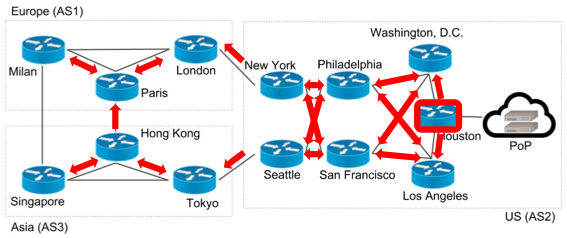

The converges-before-graph verification algorithm for eventually-stable control-plane properties is formalized in Lean and proved sound.
Abstract
Network operators are often interested in verifying eventually-stable properties of network control planes: properties of control plane states that hold eventually, and hold forever thereafter, provided the operating environment remains unchanged. Examples include eventually-stable reachability, access control, or path length properties. In this work, we introduce CB-Ver, a new framework for verifying such properties, based on the key idea of a converges-before graph (CB-graph for short). When a user provides interfaces for each network component, CB-Ver checks the necessary component-by-component requirements in parallel using an SMT solver. In addition, the tool automatically synthesizes a CB-graph and checks whether it connects all nodes in a network – if it does, the interfaces are valid and users can check whether additional eventually-stable properties are implied. Moreover, the CB-graph can then be used to determine fault tolerance properties of the network. We formalize our verification algorithm in the Lean theorem proving environment and prove its soundness. We evaluate the performance of CB-Ver on a range of benchmarks that demonstrate its ability to verify expressive properties in reasonable time. Finally, we demonstrate it is possible to automatically generate suitable interfaces by turning the problem around: Given a CB-graph, we use an off-the-shelf Constrained Horn Clause (CHC) solver to synthesize interfaces for every network component that together ensure the given correctness property.
Problem
Network operators need to verify eventually-stable properties of control planes (reachability, access control, path length), but doing so for large networks with modular, component-by-component reasoning has lacked a verified algorithmic foundation.
Approach
The authors introduce CB-VER, a framework based on converges-before graphs (CB-graphs). When a user provides interfaces for each network component, CB-VER checks requirements in parallel using an SMT solver, then automatically synthesizes a CB-graph to verify that interfaces are valid. Given a CB-graph, a CHC solver can synthesize interfaces automatically. The verification algorithm is formalized in Lean and proved sound.

Figure 4 : CB-graph of a cross-world network from the Batfish tutorial [ batfish-tutorials-failure ] . Houston (bordered in red) is a CB-root and directed arrows are CB-edges.
Results
CB-VER verifies expressive eventually-stable properties on a range of benchmarks in reasonable time. It handles fault tolerance analysis and supports automatic interface generation via CHC solvers.